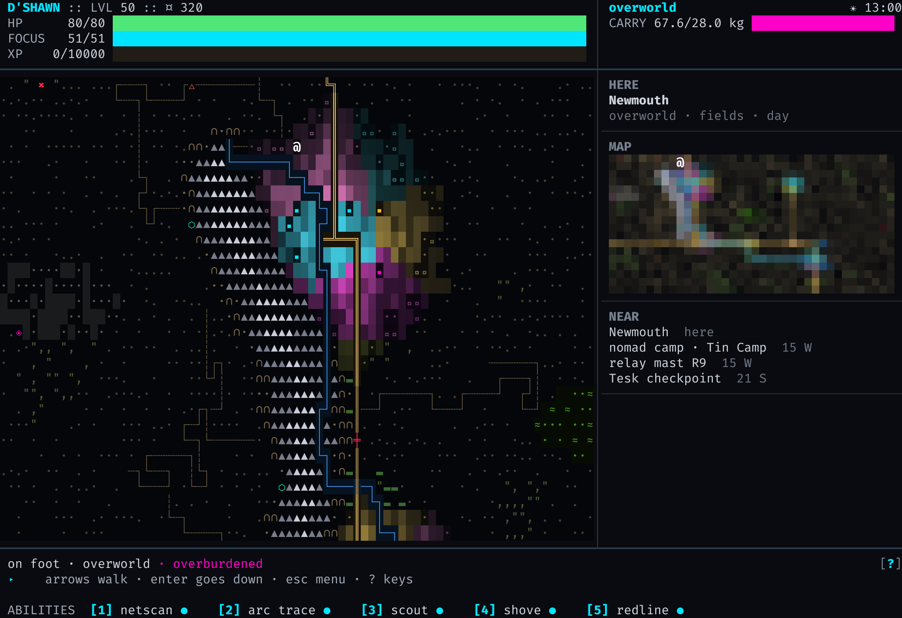
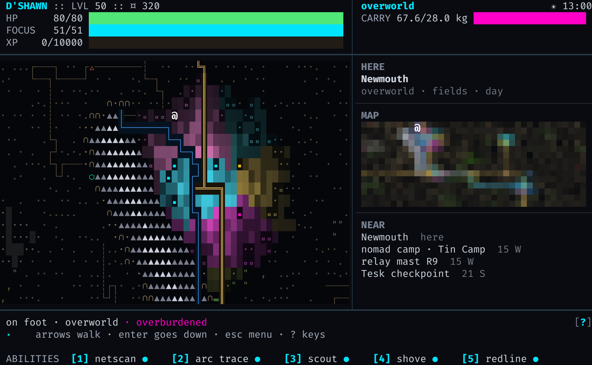
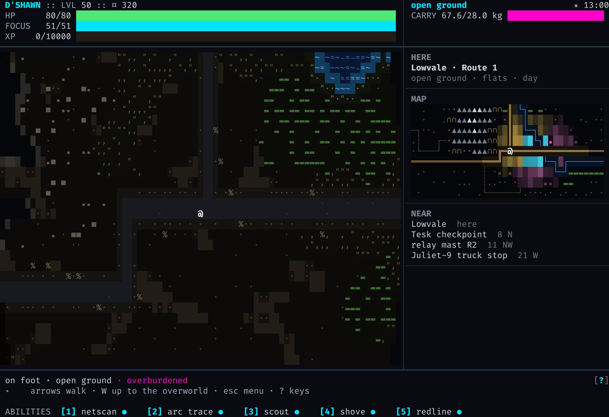
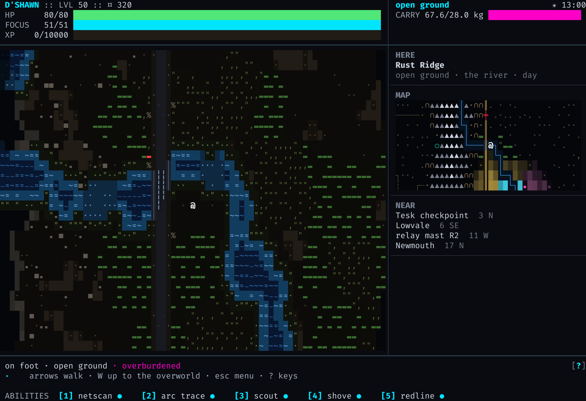
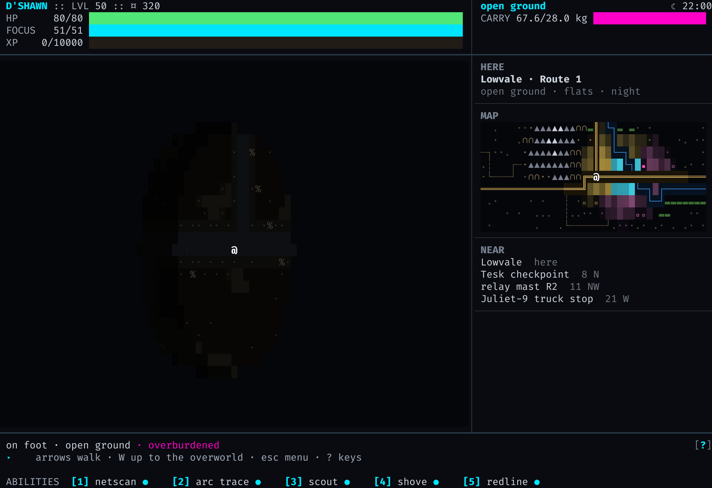

Real screens from the game, drawn by the shot harness and painted the way the window
paints them (seed 8, the large city). Nothing here is a mock: it is the play screen running
OutsideScreen over the world the generator made.
Press W on the open street and you're on the overworld, on the tile of the city you were standing in. The atlas look, one cell a tile, in the play screen's own bands, panel and footer. The panel has HERE (where you are, the road if one runs there, the ground and the hour), the whole world, NEAR (the nearest cities and places, how far and which way) and the log.

The same at the smallest terminal, 100×30:

enter on any tile puts you on its ground one level down, on its road if it has one. You walk cell by cell, and walking off a tile's edge takes you onto the next one. The time is the city's: a step costs what it does in the street, and a tile on the overworld costs eight of them, more in the hills and mountains. By day you see across the open ground. What you've seen stays dim behind you.



The same road at 22:00: there are no lamps out here, just the moon.
| hjkl yubn ↑↓←→ | walk: a tile on the overworld, a cell on the ground |
| enter | down onto the tile you're on (on a tile of the city: back into the city there) |
| W | up: from the open ground to the overworld; from the city's open street to the world |
| esc · s · ? | pause menu · save · the keys |
Stepping onto the city from outside takes you straight into it. Walking off the city's street at its edge takes you onto the ground beside it. Indoors, jacked in or in a fight, W says why not. A run saved out there opens out there again; an old save gets its world the first time you press W.
cargo run --release -p strata-zero --features window --target-dir target/smoke -- --window
(it builds into target/smoke, so your target/release/strata is left alone).
NEW GAME builds the large city now; on any open street press W.